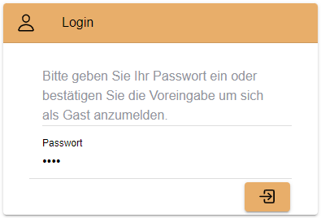

Getting Started
This quick 'Getting Started' should help you setup a complete development environment. On finishing you will have a working instance of OpenEMS Edge, with simulated energy storage and photovoltaic system, as well as an OpenEMS UI for monitoring the simulator inside your web browser. Finally an instance of OpenEMS Backend is added to simulate a cloud backend that connects UI and Edge.
1. Download the source code
-
Download any git client and install it. Our recommendation is Sourctree by Atlassian
-
Clone the OpenEMS git repository
-
In Sourcetree:
-
press File → Clone
-
enter the git repository path
https://github.com/OpenEMS/openems.git -
select a target directory, for example
C:\Users\your.user\git\openems -
open Advanced Settings
-
select the branch develop
-
and press Clone.
 Figure 1. Cloning the git repository using Sourcetree
Figure 1. Cloning the git repository using Sourcetree
-
-
Alternatively: with the git command line utility
-
open a console
-
change to the target directory
-
execute
git clone https://github.com/OpenEMS/openems.git --branch develop
-
-
-
Git is downloading the complete source code for you.
2. Setup Eclipse IDE for OpenEMS Edge and Backend
-
Prepare Eclipse IDE
-
Download Java SE Development Kit 8 and install it
-
Download Eclipse for Java , install and start it
-
On first start you will get asked to create a workspace. Select a directory - for example
C:\Users\your.user\git\openems-workspace- and press Launch. The directory needs to be different from your source code directory selected above. Figure 2. Creating a workspace in Eclipse IDE
Figure 2. Creating a workspace in Eclipse IDE -
Install BndTools in Eclipse:
Menu: Help → Eclipse Marketplace… → Find: → enter Bndtools → press Install
-
-
Import OpenEMS component projects (OSGi bundles):
Menu: File → Import… → Bndtools → Existing Bnd Workspace → Root directory: Browse… → select the directory with the source code - for example
C:\Users\your.user\git\openems→ OK → Finish → "Switch to Bndtools perspective?" yes -
Eclipse should have successfully built OpenEMS Edge and Backend, showing no entry in Problems.
 Figure 3. Eclipse IDE showing 'no problems'
Figure 3. Eclipse IDE showing 'no problems'
3. Run OpenEMS Edge and start Simulator
-
Run OpenEMS Edge
-
In Eclipse IDE open the project io.openems.edge.application and double click on EdgeApp.bndrun.
 Figure 4. io.openems.edge.application project in Eclipse IDE
Figure 4. io.openems.edge.application project in Eclipse IDE -
Click on Run OSGi to run OpenEMS Edge. You should see log outputs on the console inside Eclipse IDE.
 Figure 5. OpenEMS Edge initial log output
Figure 5. OpenEMS Edge initial log output
-
-
Configure and start the Simulator
-
Open the Apache Felix Web Console Configuration .
Login with username admin and password admin.
-
Note: Apache Felix Web Console Configuration only works with a running console, otherwise you will receive a error message on your Browser.
+ .Apache Felix Web Console Configuration image::apache-felix-console-configuration.png[Apache Felix Web Console Configuration]
-
Configure a Scheduler
The Scheduler is responsible for executing the control algorithms (Controllers) and defines the OpenEMS Edge application cycle -
Click on "Scheduler All Alphabetically"
 Figure 6. Configuration of All Alphabetically Scheduler
Figure 6. Configuration of All Alphabetically Scheduler -
Accept the default values and click Save
-
You created your first instance of an OpenEMS Component with ID "scheduler0". The log shows:
INFO [onent.AbstractOpenemsComponent] [scheduler0] Activate AllAlphabetically [edge.scheduler.allalphabetically]Add any other OpenEMS Components in the same way:
-
-
Configure debug outputs on the console: "Controller Debug Log". The default values can be accepted without changes.
 Figure 7. Configuration of Controller Debug Log
Figure 7. Configuration of Controller Debug LogThe log shows:
INFO [onent.AbstractOpenemsComponent] [ctrlDebugLog0] Activate DebugLog [edge.controller.debuglog],followed once per second by
INFO [e.controller.debuglog.DebugLog] [ctrlDebugLog0] _sum[Ess SoC:0 %|L:0 W Grid L:0 W Production L:0 W Consumption L:0 W].It is once per second because you accepted the default value of "1000 ms" for "Cycle time" in the Scheduler configuration. -
Configure the standard-load-profile datasource using the according input file in the csv-reader: "Simulator DataSource: CSV Predefined". Select "H0_HOUSEHOLD_SUMMER_WEEKDAY_STANDARD_LOAD_PROFILE" as the "Source".
 Figure 8. Configuration of Simulator DataSource: CSV Predefined as standard load profile datasource
Figure 8. Configuration of Simulator DataSource: CSV Predefined as standard load profile datasourceThe log shows:
INFO [onent.AbstractOpenemsComponent] [datasource0] Activate CsvDatasourcePredefined [edge.simulator.datasource.csv],The data source was configured with the OpenEMS Component ID "datasource0" which will be used in the next step as reference. -
Configure a simulated grid meter: "Simulator GridMeter Acting". Configure the Datasource-ID "datasource0" to refer to the data source configured above.
 Figure 9. Configuration of Simulator GridMeter Acting
Figure 9. Configuration of Simulator GridMeter ActingThis time some more logs will show up. Most importantly they show, that the Grid meter now shows a power value.
INFO [onent.AbstractOpenemsComponent] [meter0] Activate GridMeter [edge.simulator.meter.grid.acting] [onent.AbstractOpenemsComponent] [meter0] Deactivate GridMeter [edge.simulator.meter.grid.acting] [onent.AbstractOpenemsComponent] [meter0] Activate GridMeter [edge.simulator.meter.grid.acting] [e.controller.debuglog.DebugLog] [ctrlDebugLog0] _sum[Ess SoC:0 %|L:0 W Grid L:1423 W Production L:0 W Consumption L:1423 W] meter0[1423 W]
This setup causes the simulated grid-meter to take the standardized load-profiles data as input parameter. 'Acting' referrs to the fact, that this meter actively provides data - in opposite to a 'Reacting' device that is reacting on other components: for example the 'Simulator.EssSymmetric.Reacting' configured below. -
Configure a simulated reacting energy storage system: "Simulator EssSymmetric Reacting". The default values can be accepted without changes. (If you choose an other setup as the one described here you may have to create a new Datasource-Component and provide its ID here. The actual data is ignored, but the Datasource’s Time-Delta value is required to calculate values with time-dependant units.)
 Figure 10. Configuration of Simulator EssSymmetric Reacting
Figure 10. Configuration of Simulator EssSymmetric ReactingThe log shows:
INFO [e.controller.debuglog.DebugLog] [ctrlDebugLog0] _sum[Ess SoC:50 %|L:0 W Grid L:864 W Production L:0 W Consumption L:864 W] ess0[SoC:50 %|L:0 W|OnGrid] meter0[864 W]Note, that the DebugLog now shows data for the battery, but the charge/discharge power stays at "0 W" and the state of charge stays at "50 %" as configured. Next step is to configure a control algorithm that tells the battery to charge or discharge.
-
Configure the self-consumption optimization algorithm: "Controller Balancing Symmetric". Configure the Ess-ID "ess0" and Grid-Meter-ID "meter0" to refer to the components configured above.
 Figure 11. Configuration of Symmetric Balancing Controller
Figure 11. Configuration of Symmetric Balancing ControllerThe log shows:
INFO [e.controller.debuglog.DebugLog] [ctrlDebugLog0] _sum[Ess SoC:49 %|L:1167 W Grid L:-39 W Production L:0 W Consumption L:1128 W] ess0[SoC:49 %|L:1167 W|OnGrid] meter0[-39 W]Note, how the Controller now tells the battery to discharge ( Ess SoC:49 %|L:1167 W), trying to balance the Grid power to "0 W" (Grid L:-39 W): -
Configure the websocket Api Controller: "Controller Api Websocket". The default values can be accepted without changes.
 Figure 12. Configuration of Controller Api Websocket
Figure 12. Configuration of Controller Api WebsocketThe log shows:
INFO [onent.AbstractOpenemsComponent] [ctrlApiWebsocket0] Activate WebsocketApi [edge.controller.api.websocket] INFO [ler.api.websocket.WebsocketApi] [ctrlApiWebsocket0] Websocket-Api started on port [8085].
The Controller Api Websocket is required to enable access to OpenEMS Edge by a local OpenEMS UI.
4. Setup Visual Studio Code for OpenEMS UI
-
Download node.js LTS and install it.
-
Download Visual Studio Code , install and start it.
-
Open OpenEMS UI source code in Visual Studio Code:
Menu: File → Open Folder… → Select the
uidirectory inside the downloaded source code (for exampleC:\Users\your.user\git\openems\ui) → Select directory -
Open the integrated terminal:
Menu: Terminal → New Terminal
-
Install Angular CLI :
npm install -g @angular/cliIf you receive an error message that the command npmcould not be found, make sure that node.js is installed and restart Visual Studio Code. -
Resolve and download dependencies:
npm install
5. Run OpenEMS UI
-
In Visual Studios integrated terminal type…
ng serveThe log shows:
NG Live Development Server is listening on localhost:4200, open your browser on http://localhost:4200/ -
Open a browser at http://localhost:4200
-
You should see OpenEMS UI. Log in as user "guest" by clicking on the tick mark. Alternatively type "admin" in the password field to log in with extended permissions.
Figure 13. OpenEMS UI Login screen -
Change to the Energymonitor by clicking on the arrow.
 Figure 14. OpenEMS UI Overview screen
Figure 14. OpenEMS UI Overview screen -
You should see the Energymonitor showing the same data as the DebugLog output on the console.
 Figure 15. OpenEMS UI Energymonitor screen
Figure 15. OpenEMS UI Energymonitor screenOpenEMS UI will complain that "no timedata source is available". Because of this the historic chart is not yet functional.
6. Integrate OpenEMS Backend
Instead of having Edge and UI talk to each other directly, the communication can also be proxied via Backend.
6.1. Run and configure OpenEMS Backend
-
In Eclipse IDE open the project io.openems.backend.application and double click on BackendApp.bndrun.
 Figure 16. io.openems.backend.application project in Eclipse IDE
Figure 16. io.openems.backend.application project in Eclipse IDE -
Click on Run OSGi to run OpenEMS Backend. You should see log outputs on the console inside Eclipse IDE.
 Figure 17. OpenEMS Backend initial log output
Figure 17. OpenEMS Backend initial log output -
Configure the Backend
-
Open the Apache Felix Web Console Configuration .
Apache Felix Web Console for OpenEMS Backend is started on port 8079 by default. This is configured using the org.osgi.service.http.portsetting in BackendApp.bndrun.Login with username admin and password admin.
 Figure 18. Apache Felix Web Console Configuration for OpenEMS Backend
Figure 18. Apache Felix Web Console Configuration for OpenEMS Backend -
Configure Edge.Websocket
The Edge.Websocket service is responsible for the communication between OpenEMS Backend and OpenEMS Edge. In the example we are configuring the Port 8081. This port needs to match with what we configure later in OpenEMS Edge.
 Figure 19. Configuration of Backend Edge.Websocket
Figure 19. Configuration of Backend Edge.Websocket -
Configure Ui.Websocket
The Ui.Websocket service is responsible for the communication between OpenEMS Backend and OpenEMS UI. In the example we are configuring the Port 8082. This port needs to match with what we configure later in the OpenEMS UI environment file.
 Figure 20. Configuration of Backend Ui.Websocket
Figure 20. Configuration of Backend Ui.Websocket -
Configure Timedata
The Timedata service provider is responsible for holding the current and historic data of each connected Edge device. In the example we are configuring the Timedata.Dummy service. It takes no configuration parameters, so just press Save. In a production system you would want to use a real implementation like Timedata.InfluxDB.
 Figure 21. Configuration of Backend Timedata.Dummy
Figure 21. Configuration of Backend Timedata.Dummy -
Configure Metadata
The Metadata service provider is responsible for authentication of Edge devices and Users connecting via UI. In the example we are configuring the Metadata.Dummy service. It takes no configuration parameters, so just press Save. In a production system you would want to use a real implementation like Metadata.File or Metadata.Odoo.
 Figure 22. Configuration of Backend Metadata.Dummy
Figure 22. Configuration of Backend Metadata.Dummy
-
6.2. Configure OpenEMS Edge
Next we will configure OpenEMS Edge to connect to the OpenEMS Backend Edge.Websocket service.
-
Switch back to the Apache Felix Web Console Configuration for OpenEMS Edge .
-
Configure the "Controller Api Backend" Component. The default values can be accepted without changes right now.
 Figure 23. Configuration of Controller Api Backend
Figure 23. Configuration of Controller Api BackendSome configuration parameters are still noteworthy here:
-
"Apikey" is used to authenticate this Edge at the Backend Metadata service.
-
"Uri" is set to
ws://localhost:8081. This defines an unencrypted websocket ("ws://") connection to the local computer on port "8081" like we configured before for the Edge.Websocket. -
"Cycle Time" defines how often data is sent to Backend
Once you press save you should see logs in OpenEMS Backend
[ctrlBackend0] Connected to OpenEMS Backendand OpenEMS Edge
[Edge.Websocket] Edge [edge0] connected
-
6.3. Connect OpenEMS UI with Backend
-
In Visual Studio Code open the file
ui/src/environments/environment.tsand configure it as follows:import { Environment } from "../app/shared/type/environment"; export const environment: Environment = { production: false, debugMode: true, url: "ws://localhost:8082", backend: "OpenEMS Backend", };It is again noteworthy here, that:
-
"url" is set to
ws://localhost:8082. This defines an unencrypted websocket ("ws://") connection to the local computer on port "8082" like we configured before for the Ui.Websocket. -
"backend" is set to "OpenEMS Backend". This option is used in certain places inside OpenEMS UI that need to be treated differently for connections to OpenEMS Edge and OpenEMS Backend.
-
-
In Visual Studios integrated terminal type…
ng serve -
Open a browser at http://localhost:4200
-
You should see again OpenEMS UI, but this time you are not asked for a login (because Metadata.Dummy does not require any) and are directly forwarded to the Energy Monitor at
http://localhost:4200/device/edge0/index. You are now seeing the data from OpenEMS Edge via OpenEMS Backend. Figure 24. UI via Backend
Figure 24. UI via Backend
Next steps
Now that you setup a complete development environment and have a working instance of OpenEMS Edge, OpenEMS Backend an OpenEMS UI, you can continue implementing your first device driver in OpenEMS. We provide a tutorial that explains the steps to implement an electric meter in OpenEMS Edge that is connected via Modbus/TCP. The meter itself is simulated using a small Modbus slave application, so no external hardware is required for this guide. → Implementing a Device